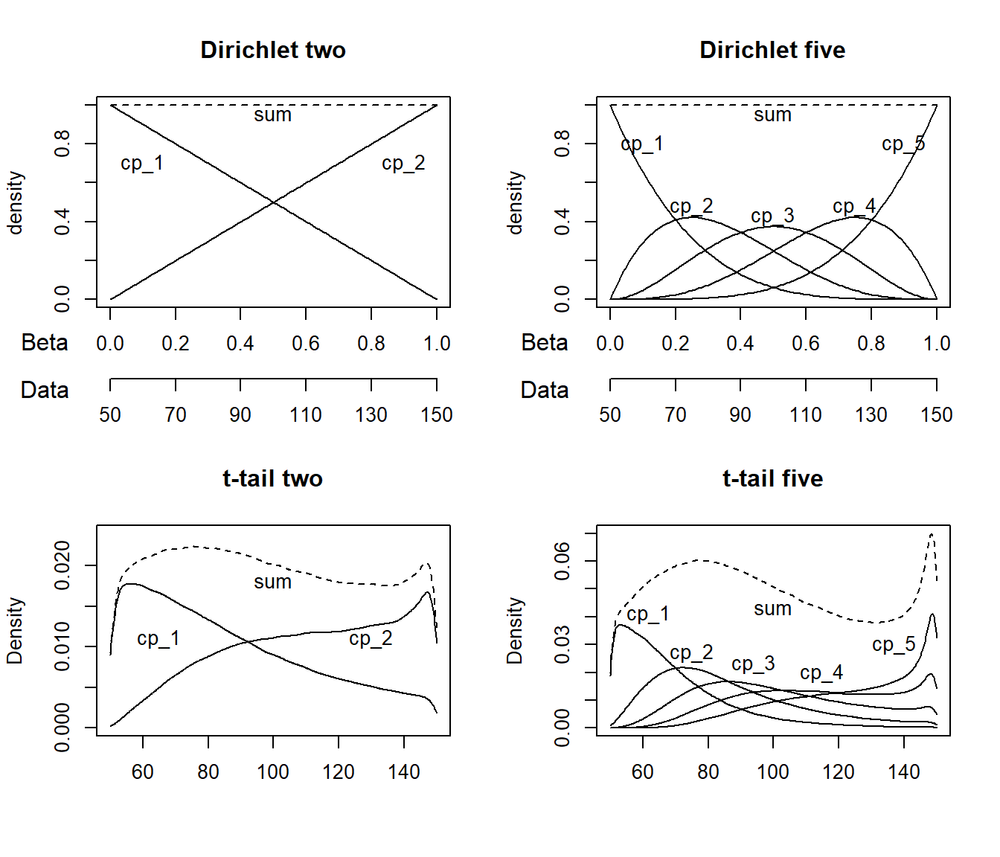
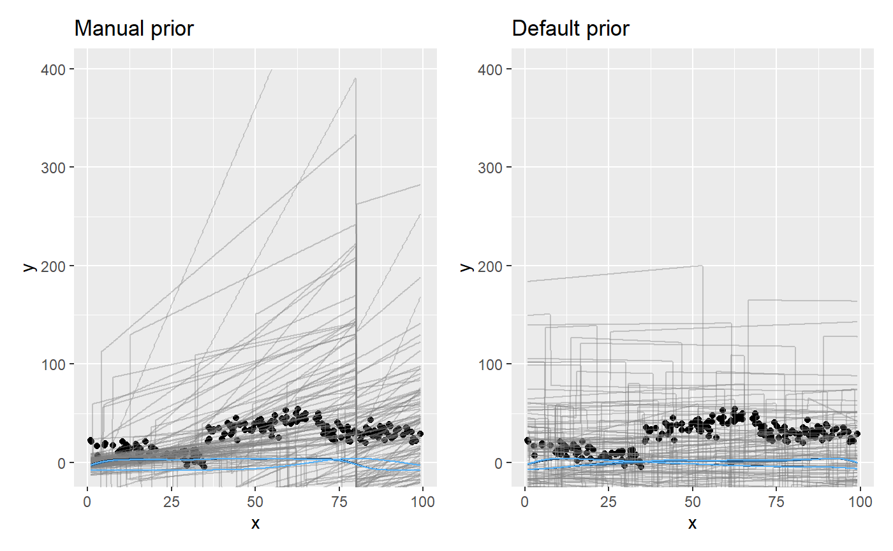

Setting a prior
mcp takes priors in the form of a named list. The names are the parameter names, and the values are JAGS code. Here is a fairly complicated example, just to get enough priors to demonstrate the various ways priors can be used:
model = list( y ~ 1 + x, # int_1 + x_1 ~ 1 + x, # cp_1, int_2, and x_2 ~ 1 + x # cp_2 ) prior = list( int_1 = "dnorm(0, 5) T(, 10)", # Intercept; less than 10 x_1 = "dbeta(2, 5)", # slope: beta with right skew cp_1 = "dunif(MINX, cp_2)", # change point between smallest x and cp_2 x_2 = "dt(0, 1, 3) T(x_1, )", # slope 2 > slope 1 and t-distributed cp_2 = 80, # A constant (set; not estimated) x_3 = "x_2" # continue same slope # int_2 and int_3 not specified. Use default. )
The values are JAGS code, so all JAGS distributions are allowed. These also include gamma, dt, cauchy, and many others. See the JAGS user manual for more details. The parameterization of the distributions are identical to standard R. Use SD when you specify priors for dnorm, dt, dlogis, etc. mcp converts to precision for JAGS under the hood via the sd_to_prec() function (prec = 1 / sd^2), so you don’t have to worry about it. You can see the effects of this conversion by inspecting the difference between fit$prior (using SD) and fit$jags_code (using precision).
Other notes:
Order restriction is automatically applied to change points (
cp_*parameters) using truncation (e.g.,T(cp_1, )) so that they are in the correct order on the x-axis. You can override this behavior by definingT()ordunifyourself (dunifis inherently truncated), in which casemcpwon’t do further. Dirichlet priors are inherently ordered (jump to section) and cannot be further truncated.In addition to the model parameters,
MINX(minimum x-value),MAXX(maximum x-value),SDX,MEANX,MINY,MAXY,MEANY, andSDYare also available when you set priors. They are used to set uninformative default priors. Strictly speaking, this is “illegal”, but it does ensure that estimation works reasonably across many orders of magnitude.You can fix any parameter to a specific value. Simply set it to a numerical value (as
cp_2above). A constant is a 100% prior belief in that value, and it will therefore not be estimated.You can also equate one variable with another (
x_3 = "x_2"above). You would usually do this to share parameters across segments, but you can be creative and do something likex_3 = "x_2 + 5 - cp_1/10"if you want. In any case, it will lead to one less parameter being estimated, i.e., one less free parameter.
Let us see the priors after running them through mcp and compare to the default priors:
library(mcp) options(mc.cores = 3) # Speed up sampling! empty_manual = mcp(model, prior = prior, sample = FALSE) empty_default = mcp(model, sample = FALSE) # Look at fit$prior and show them side-by-side cbind(manual = empty_manual$prior, default = empty_default$prior)
## manual
## cp_1 "dunif(MINX, cp_2)"
## cp_2 80
## int_1 "dnorm(0, 5) T(, 10)"
## int_2 "dt(0, 3 * SDY, 3)"
## int_3 "dt(0, 3 * SDY, 3)"
## x_1 "dbeta(2, 5)"
## x_2 "dt(0, 1, 3) T(x_1, )"
## x_3 "x_2"
## sigma_1 "dnorm(0, SDY) T(0, )"
## default
## cp_1 "dt(MINX, (MAXX - MINX) / N_CP, N_CP - 1) T(cp_0, MAXX)"
## cp_2 "dt(MINX, (MAXX - MINX) / N_CP, N_CP - 1) T(cp_1, MAXX)"
## int_1 "dt(0, 3 * SDY, 3)"
## int_2 "dt(0, 3 * SDY, 3)"
## int_3 "dt(0, 3 * SDY, 3)"
## x_1 "dt(0, SDY / (MAXX - MINX), 3)"
## x_2 "dt(0, SDY / (MAXX - MINX), 3)"
## x_3 "dt(0, SDY / (MAXX - MINX), 3)"
## sigma_1 "dnorm(0, SDY) T(0, )"Now, let’s simulate some data that from the model. The following priors are “at odds” with the actual data so as to show their effect.
df = data.frame(x = runif(200, 0, 100)) # 200 datapoints between 0 and 100 df$y = empty_default$simulate(df$x, int_1 = 20, int_2 = 30, int_3 = 30, # intercepts x_1 = -0.5, x_2 = 0.5, x_3 = 0, # slopes cp_1 = 35, cp_2 = 70, # change points sigma = 5)
Sample the prior and posterior. We let the manual fit adapt for longer, since it is harder to find the right posterior under these weird prior constraints (priors will usually improve sampling efficiency).
fit_manual = mcp(model, data = df, sample = "both", adapt = 10000, prior = prior) fit_default = mcp(model, data = df, sample = "both", adapt = 10000)
First, let’s look at the priors side by side. Notice the use of prior = TRUE to show prior samples. This works in plot(), plot_pars(), and summary() among others.
library(ggplot2) pp_default = plot_pars(fit_default, type = "dens_overlay", prior = TRUE) + ggtitle("Default priors") pp_manual = plot_pars(fit_manual, type = "dens_overlay", prior = TRUE) + ggtitle("Manual priors") pp_default + pp_manual

Here is the resulting posterior fits:
plot_default = plot(fit_default) + ggtitle("Default priors") plot_manual = plot(fit_manual) + ggtitle("Manual priors") plot_default + plot_manual
We see the effects of the priors.
- The intercept
int_1was truncated to be below 10. - The slope
x_1is bound to be non-negative (becausedbeta). - The slopes
x_2andx_3were forced to be identical. - The change point
cp_2was a constant, so there is no uncertainty there.
Of course, it will usually be the other way around: setting priors manually will often serve to sample the “correct” posterior.
Default priors on change points
The following are treated more formally in the mcp paper.
Change points have to be ordered from left (cp_1) to right (cp_2+). This order restriction is enforced through the priors and this is not trivial. mcp currently offers two “packages” of change point priors that achieves different goals:
Speed and estimation: The default prior is suitable for estimation, prediction, and it works well for
loo()cross-validation as well. It’s main virtue is that it samples the change point posteriors relatively effectively, but it will often be deeply unfit for Bayes Factors if there are 3+ change points (see below). It may also favor “late” change points too much if estimating many change points with little data (e.g. 5 change points with 100 data points or 10 with 300).Uninformative and nice mathematical properties: Use the
Dirichletprior if you want a more uninformative prior that is better suited for everything including Bayes Factors, scientific publication, or even estimation at 6+ change points. It has better known mathematical properties and a precedence in Büerkner & Charpentier (2019). It is not default because it often samples order(s) of magnitude less efficiently than the default priors while yielding identical fits. In these cases you need to increase the number of MCMC samples (e.g.mcp(..., iter = 20000)).
They two “packages” are identical for one change point, though the default still samples more effectively.

The t-tail prior on 2+ change points (default)
The first change point defaults to cp_1 = dunif(MINX, MAXX). In other words, the change point has to happen in the observed range of x, but it is equally probable across this range. This is identical to the Dirichlet prior.
For 2+ change points, the default (on all change points) is cp_i = dt(MINX, (MAXX-MINX) / N_CP, N_CP - 1) T(cp_i-1, MAXX). This is not as complicated as it looks, so let me unpack it.
- It is t-distributed with \(N - 1\) degree of freedom (
dt(..., N_CP - 1)). This ensures narrower priors as the number of change points increase, so as to avoid excessive accumulation of densities at high \(x\). - It is truncated to be greater than the previous
cp. For example,cp_3 = dt(...) T(cp_2, MAXX). Sincecp_0 = MINX, all change points are “forced” to be in the observed range ofx. - The standard deviation is the distance between equally-spaced change points:
(MAXX - MINX) / N_CP. - The mean is always the lowest observed
x. Thuscp_1is a half-t andcp_2+are right tails of the same t. Hence the name “t-tail prior”. Since they are estimated using MCMC, the fact that the absolute densities are smaller for later change points is of no importance since only the relative densities matter.
One side effect of the truncation is that later change points have greater prior probability density towards the right side of the x-axis. In practice, this “bias” is so weak that it takes a combination of many change points and few data for it to impact the posterior in any noticeable way.
Dirichlet-based prior on change points
The Dirichlet distribution is a multivariate beta prior and these betas jointly form a simplex, meaning that they are all positive and sum to one. They are all in the interval \([0, 1]\) so they are shifted and scaled to \([min(x), max(x)]\). The Dirichlet prior has the nice property that (1) the order-restriction and boundedness is inherent to the distribution, and (2) it represents a uniform prior that any change happens at any \(x\), i.e., it is maximally uninformative. It underlies the modeling of monotonic effects in brms (Büerkner & Charpentier (2019)).
To use the Dirichlet prior, you need to specify it for all or none of the change points. E.g.,
prior_dirichlet = list( cp_1 = "dirichlet(1)", cp_2 = "dirichlet(1)", cp_3 = "dirichlet(1)" )
The number in the parenthesis is the \(\alpha\) parameter, so you could also specify cp_1 = "dirichlet(3) if you want to push credence for that and later change points more to the rightwards while pushing earlier priors leftwards.
Manual priors on change points
You can easily change or modify change point priors, just as we did in the initial example. But beware that the nature of the priors change when truncation is applied. Use plot_pars(fit, prior = TRUE) to check the resulting prior.
If you want more informed priors on the change point location, i.e., cp_2 = "dnorm(40, 10), mcp adds this order restriction by adding cp_2 = "dnorm(40, 10) T(cp_1, MAXX). You can avoid this behavior by explicitly doing an “empty” truncation yourself, e.g., cp_2 = "dnorm(40, 10) T(,). However, the model may fail to sample the correct posterior in samples where order restriction is not kept.
Default priors on linear predictors
OBS: These priors are very to change in versions beyond mcp 0.2, but not drastically.
You can see the default priors for the gaussian() family in the previous example. They are similar to the brms default priors, i.e., t-distributed around mean = 0 with a standard deviation that scales with the data.
This means that there will be some “shrinkage” towards a mean and SD of zero for all parameters, especially for parameters with a large mean and a small SD.
The slopes are scaled as if it changed +/- 1 SD through the entire x-axis. This too will be insufficient for very steep slopes, i.e., if there are many change points on x.
See the family-specific articles for more information about the priors for other families:
-
vignette("binomial")- also relevant forbernoulli vignette("poisson")
Prior predictive checks
Prior predictive checks is a great way to ensure that the priors are meaningful. Simply set sample = "prior". Let us do it for the two sets of priors defined previously in this article, to see their different prior predictive space.
# Sample priors fit_pp_manual = mcp(model, data = df, prior, sample = "prior") fit_pp_default = mcp(model, data = df, sample = "prior") # Plot it plot_pp_manual = plot(fit_pp_manual, lines = 100) + ylim(c(-400, 400)) + ggtitle("Manual prior") plot_pp_default = plot(fit_pp_default, lines = 100) + ylim(c(-400, 400)) + ggtitle("Default prior") plot_pp_manual + plot_pp_default # using patchwork

You can see how the manual priors are more dense to the left, and the “concerted” change at x = 80.
JAGS code
Here is the JAGS code for fit_manual:
cat(fit_manual$jags_code)
##
## model {
##
## # Priors for population-level effects
## cp_0 = MINX # mcp helper value.
## cp_3 = MAXX # mcp helper value.
##
## cp_1 ~ dunif(MINX, cp_2)
## cp_2 = 80 # Fixed
## int_1 ~ dnorm(0, 1/(5)^2) T(, 10)
## int_2 ~ dt(0, 1/(3*SDY)^2, 3)
## int_3 ~ dt(0, 1/(3*SDY)^2, 3)
## x_1 ~ dbeta(2, 5)
## x_2 ~ dt(0, 1/(1)^2, 3) T(x_1, )
## x_3 = x_2 # Fixed
## sigma_1 ~ dnorm(0, 1/(SDY)^2) T(0, )
##
##
## # Model and likelihood
## for (i_ in 1:length(x)) {
## X_1_[i_] = min(x[i_], cp_1)
## X_2_[i_] = min(x[i_], cp_2) - cp_1
## X_3_[i_] = min(x[i_], cp_3) - cp_2
##
## # Fitted value
## y_[i_] =
##
## # Segment 1: y ~ 1 + x
## (x[i_] >= cp_0) * (x[i_] < cp_1) * int_1 +
## (x[i_] >= cp_0) * (x[i_] < cp_1) * x_1 * X_1_[i_] +
##
## # Segment 2: y ~ 1 ~ 1 + x
## (x[i_] >= cp_1) * (x[i_] < cp_2) * int_2 +
## (x[i_] >= cp_1) * (x[i_] < cp_2) * x_2 * X_2_[i_] +
##
## # Segment 3: y ~ 1 ~ 1 + x
## (x[i_] >= cp_2) * int_3 +
## (x[i_] >= cp_2) * x_3 * X_3_[i_]
##
## # Fitted standard deviation
## sigma_[i_] = max(0,
## (x[i_] >= cp_0) * sigma_1 )
##
## # Likelihood and log-density for family = gaussian()
## y[i_] ~ dnorm((y_[i_]), 1 / sigma_[i_]^2) # SD as precision
## loglik_[i_] = logdensity.norm(y[i_], (y_[i_]), 1 / sigma_[i_]^2) # SD as precision
## }
## }